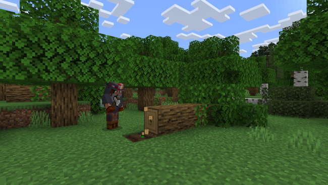
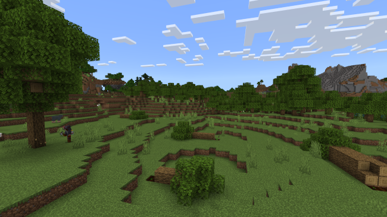
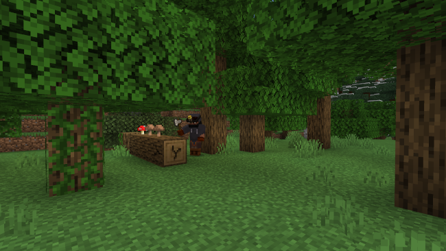
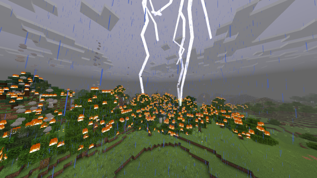

O Reflorestamento é o processo de plantio de árvores em áreas que foram desmatadas ou degradadas. Este esforço é essencial para restaurar ecossistemas, combater as mudanças climáticas e preservar a biodiversidade. As árvores desempenham um papel crucial na absorção de dióxido de carbono, ajudando a mitigar o efeito estufa. Além disso, florestas saudáveis fornecem habitat para inúmeras espécies, protegem o solo contra a erosão e mantêm os recursos hídricos.
A Exploração Florestal é uma atividade que consiste na extração de recursos naturais das florestas, como madeira, resinas e frutos. Existem diferentes tipos de exploração florestal, que podem variar desde a colheita seletiva de árvores até o desmatamento em larga escala. maestrovirtuale

Nesse método, apenas árvores maduras e de determinadas espécies são extraídas, permitindo que a floresta se regenere naturalmente. Esse é considerado um método mais sustentável de exploração, pois busca manter o equilíbrio do ecossistema florestal.

Esse método envolve a extração de grandes áreas de floresta de uma só vez, sem considerar a regeneração natural. Isso pode causar desmatamento e impactos negativos no meio ambiente, como perda de biodiversidade e degradação do solo.

Infelizmente, a exploração ilegal das florestas é uma realidade em muitas regiões do mundo. Nesse caso, a extração de madeira é feita sem autorização dos órgãos competentes, causando danos irreparáveis ao meio ambiente.
As Queimadas são a prática de incendiar terrenos, geralmente para limpar o solo para plantação ou pecuária. Podem ser causadas por fatores naturais, como raios, ou por atividades humanas, como fogueiras mal apagadas, atos criminosos ou queimas controladas que saem do controle. As queimadas podem ter consequências prejudiciais para o meio ambiente e para a saúde humana: Destruição de biomas e áreas verdes, Perda de biodiversidade, Emissão de gases de efeito estufa, Emissão de fumaça e partículas tóxicas na atmosfera.

Podem ser causadas por eventos como raios, altas temperaturas e baixa umidade, especialmente em regiões secas.
Quando é causado por seres humanos, sendo proposital ou não, ...
Destruição de habitats, perda de biodiversidade, e aumento da emissão de gases de efeito estufa.